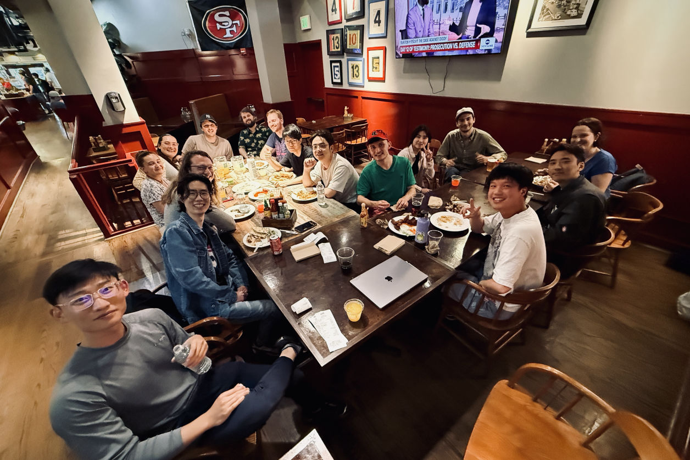
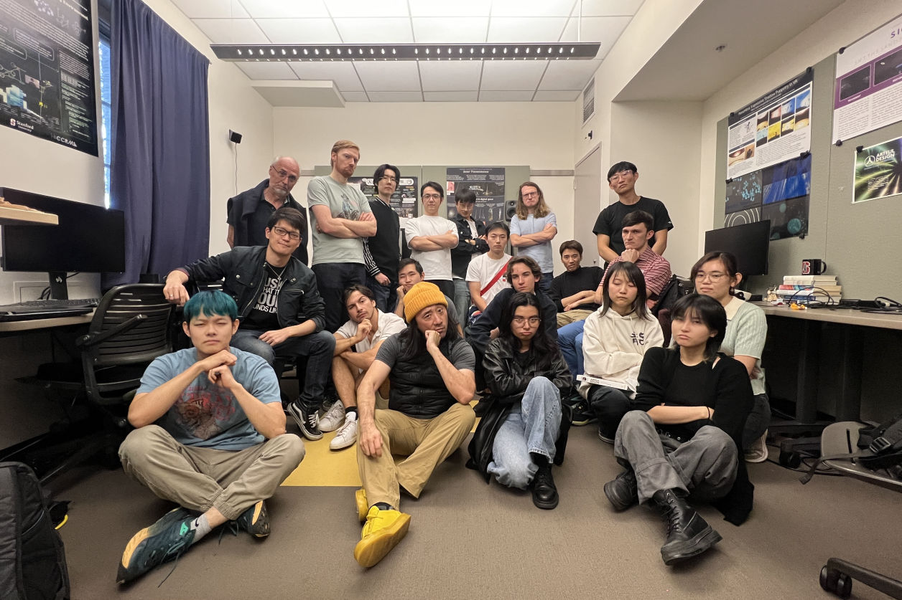
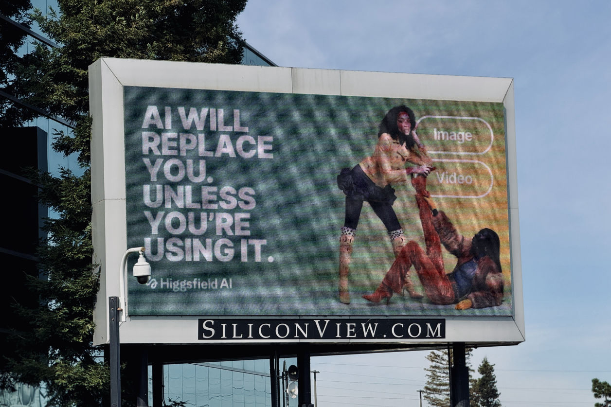
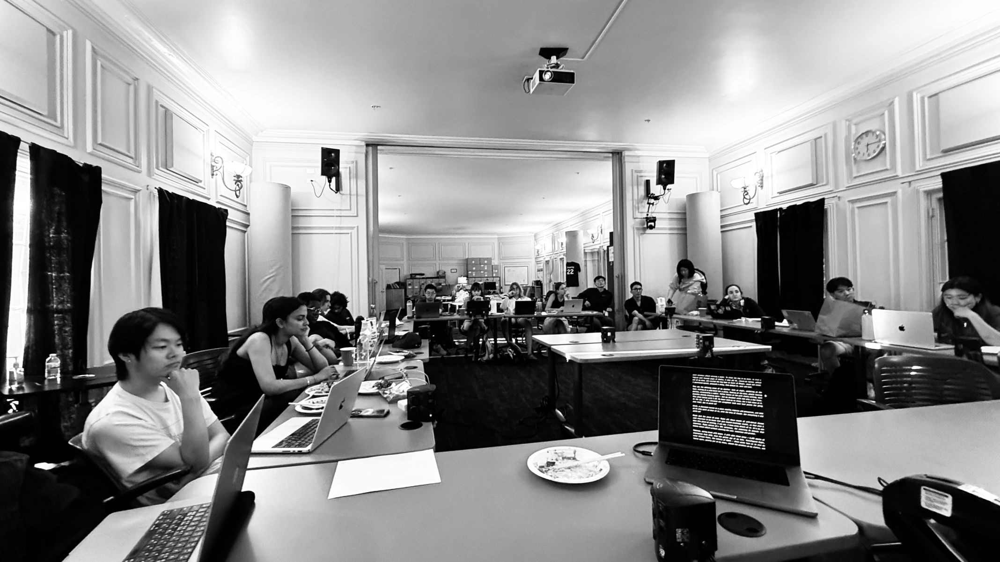

The Music, Computing, Design (MCD) research group at CCRMA works on artful tool-building as practice-based research that integrates engineering and art. In my Portfolio introduction, I outlined my group's "Three Pillars" research approach as ever cycling between "tool building", "art making", and "advocacy" as three codependent states. This mutually reinforcing cycle is propelled by something I call the “secret interest" approach, which has been part of my graduate advising philosophy for both Ph.D. and master's students at CCRMA. It was likely inspired by my own mentors of years past (e.g., my Ph.D. advisor Perry Cook at Princeton University), who balanced structure/purpose with the freedom to explore one's personal passions.
Advising: a "Secret Interest" Model of Research
“Secret interest”-driven research refers to research that is motivated not only by ostensible function (i.e., what we think the world needs), but also by an individual’s personal “secret interest” (i.e., what a person is intrinsically interested in, even if that interest does not immediately appear to be academic or useful). For example, ChuGL was created with my Ph.D. student Andrew Zhu Aday to research real-time graphics for the ChucK programming language, but was deeply motivated by Andrew's “secret interest” stemming from playing and creating indie rogue-likes and bullet-hell video games. Since 2021, this personal passion was encouraged by his taking my audiovisual design course (Music 256a), building games in that context, studying computer graphics, and---more practically, and candidly---feeling the pressure as a PhD student to "do something that could be considered research". Thus began ChuGL as an audio-driven graphics engine for ChucK both as tool-building research, but also as a means for deeply personal creative expression. Today in 2026, ChuGL has become a canonical aspect of the ChucK language and is used by many (including Andrew himself) to make audio-driven video games, audiovisual software, art installations, and much more.
Template: The “Secret Interest” Model In Action in the ChucK Development Team
• Someone has a “secret interest” (e.g., video game design) that may or may not be ostensibly "academic."
• They want to use ChucK to make something to express that interest (e.g., create a music-driven video game), perhaps for coursework or starting a new research project.
• They realize that ChucK does not support what they want to do (e.g., at the time ChucK had no built-in graphics capabilities).
• They then labor to create the functionality and tools so they can eventually use ChucK for what they desire. This tool-building process is usually at least as labor-intensive as the motivating "secret interest" artifact. (e.g., Andrew and Ge design and build ChuGL, a 2D/3D high-performance graphics system designed specifically to take advantage of ChucK’s strong-timing).
• The tool is used by the researcher to express the motivating "secret interest" (e.g., Andrew—and now many others—use ChuGL in their work of audiovisual design and video game development, while maintaining ChuGL as a creative tool for the broader ChucK community).
• Over time, the tool not only enables making the original artifact, but becomes integrated into the open-source ChucK ecosystem where it is usable by the entire community (e.g., ChuGL is now a standard part of the ChucK language); the tool, source code, documentation, tutorials, workshops, course assignments, and academic papers are published.
Other "secret-interest"-driven research include the creation of Chunity by former Ph.D. student Jack Atherton in order to support his Ph.D. work in audio-driven VR. Or WebChucK IDE by former master's student Terry Feng due to his technical expertise for web development and the desire to program ChucK directly in web browsers. SMucK was created by Ph.D. student Alex Han and master's student Kiran Bhat to support live algorithmic composition/performance. These tools are motivated by and often transcend the original "secret interest" that motivated them in the first place. At the same time, the "secret interest" ensures that the tools being build speak to a passionate interest, which results in, I believe, higher quality and more honest tools. Especially in the last ten years, the "secret interest" approach has helped to resurrect and vastly expand ChucK research and development, in turn enabling new research projects, and fostering a lasting sense of community with the group.

The ChucK Development Teams meets every two weeks, usually followed by Taco Tuesday at the Tree House, located down the hill from CCRMA.

serious people in the lab
Ultimately, this "secret interest" philosophy extends well beyond ChucK research and development. I see my job as advisor as someone who makes room for "secret interests", and works with students not to force such personal passions into a form that is acceptable by the nearest academic subfield, but rather to earnestly labor to find the relevance of the work and potentially expand a subfield to attend to new ways of thinking and doing (and to the tensions that come with new things). This approach can be seen in the diversity of Ph.D. theses over the years, spanning computer music, human-computer interaction, creative tool-building, virtual reality, academic cultural critique, and more.
Ph.D. Advisees (Graduated)
• Kunwoo Kim, Stanford CCRMA Ph.D. (graduated 2025)
Thesis: Humanistic Tool-building in Virtual Reality: An Audio-driven Approach
• Mike Mulshine, Stanford CCRMA Ph.D. (graduated 2025)
Thesis: Vernacular Computer Music
• Doğa Çavdir, Stanford CCRMA Ph.D. (graduated 2023)
Thesis: Felt Design: Inclusive Practices for Movement-based Musical Instruments
• Jack Atherton, Stanford CCRMA Ph.D. (graduated 2022)
Thesis: Tool-building for Amateur Creativity in Virtual Reality
• Spencer Salazar, Stanford CCRMA Ph.D. (graduated 2017)
Thesis: Sketching Sound: Gestural Interactions for Expressive Music Programming
• Jieun Oh, Stanford CCRMA Ph.D. (graduate 2014)
Thesis: Affective Analysis and Synthesis of Laughter
• Nicholas J. Bryan, Stanford CCRMA Ph.D. (graduated 2014)
Thesis: Interactive Sound Source Separation
Ph.D. Advisees (Current)
• Andrew Zhu Aday, Stanford CCRMA Ph.D. (4th year)
Thesis direction: Strongly-timed Audiovisual Programming with Applications to Musical Game Design
• Alex Han, Stanford CCRMA Ph.D. (2nd year)
Thesis direction: Intimate Algorithmic Musical Performance Systems and Practice
Ph.D. Students (Working Closely With)
• Celeste Betancur, Stanford CCRMA Ph.D. (4th year)
Thesis direction: Software Entity and Anomaly for Live coding, Audiovisual, Multi-modal, Multi-language Performance
• Nick Shaheed, Stanford CCRMA Ph.D. (3rd year)
Thesis direction: Programming Language Design and Interactive Deep Learning for Musical Composition and Performance
My former Ph.D. advisee, Kunwoo Kim, defended his Ph.D. thesis in May 2025 at CCRMA Stage, Stanford University. In his dissertation, Humanistic Tool-building in Virtual Reality: An Audio-driven Approach, Kim explores questions and ideas of artful tool-building in virtual reality, including the creation of a "VR orchestra". At the time of writing (2026), Dr. Kim is a Doris Duke Foundation Postdoctoral Fellow in Artful Tool-building at Stanford's Human-centered AI (HAI).
Teaching: Music 256a / Computer Science 476a ("Music, Computing, Design: The Art of Design")
As part of my teaching philosophy, I am constantly trying to meld teaching and research as a way to keep both engaging and relevant. My courses are project-based and milestones-driving, and engages in forms of critical, humanistic tool-building. Music 256a (cross-listed as Computer Science 476a) is a foundational creative design course that also serves as a "gateway" into research in my group. In Music 256a / CS 476a, approximately one-third of class meetings are given over to in-class, art studio-like critiques (I call these "milestones"), which gives students a community in which to show and workshop their works-in-progress, and get feedback along the way from their peers and instructor. For students, it is my most demanding course. I teach the "full-stack"—from the nuts-and-bolts low-level technical details to audiovisual software design to thinking about the broader philosophical and cultural implications of what we make. Artful Design was heavily inspired by years of teaching this course and, since its publications in 2018, has served as the course textbook.
This video showcases student works in my course Music 256a / Computer Science 476a "Music, Computing, Design: The Art of Design" across nine years and three assignment prompts: 1) design a real-time audio visualizer, 2) design an audiovisual interactive music sequencer, and 3) final project: design your own audiovisual interactive software tool, game, toy, interactive essay, or other.
Teaching Art, Engineering, and Humanism in a Era of AI
Drive along Highway 101 in the San Francisco Bay Area—one of the two major "arteries" of Silicon Valley between San Jose and San Francisco—and one is inundated by endless billboards promising "Superintelligence", "10x productivity!", "One Prompt, Job Done", and "AI will replace you, unless you use it." The latter speaks to the unending hype and AI FOMO narrative projected by Big Tech companies (I refer to them as Big AI in my courses) who have invested hundreds of billions of dollars in order to forcibly "will" LLM-based generative AI into adoption and profitability in every sector: business, consumer, art, education, alarmingly psychiatry, even more alarmingly national defense and war—largely devoid of considerations of ethics, culture, creative expression, humanism, and educational value. (Ironically, this fear of missing out on AI—AI FOMO—seem to be strongest in places where AI is being deployed the most: Stanford and what it once helped to create: Silicon Valley.)

A billboard that captures much of the Silicon Valley AI narrative and hype.
Driving down Highway 101 in Silicon Valley.
As a computer music researcher, computer scientist, artist, educator, parent, and human being, I remain profoundly concerned about the development, deployment, and use of artificial intelligence in our world and in our lives (even as I teach the subject at Stanford). I worry that Big AI is rushing to deploy this rapidly evolving and largely unproven technology; I worry such AI products are designed to be more extractive than inclusive. I am alarmed at the uncritical, unquestioning, uncaring attitude with which AI is used that have both short-term harmful and long-term pernicious effects on our communities, well-being, culture, and education. What is at stake includes but goes far beyond ethics of training data (this, to be sure, is a huge problem; but it is by far not the only one) and goes to the core of how we'd want to live—including why we make art and why we learn, and the role of struggle and friction inherent to both.
According to Forbes Magazine, 90% of U.S. college students used AI academically in 2025. This percentage has only increased in 2026. I find this trend alarming for it implies that students who would prefer not to use AI in their coursework (e.g., those who desire to learn through actually putting in the work) find themselves increasingly disadvantaged compared the vast majority of their peers who completes the same assignments in a fraction of the time using AI (and who—as increasing evidence [1][2] show—are learning less). Among other concerns (ranging from AI fluency to the overarching question "why an education?"), this implies that students do not truly have a choice and are heavily incentivized to "just use AI". In Spring Quarter 2026, for the first time, in my Stanford Laptop Orchestra course (where there is much creative coding and musical design), I have instituted a course policy of "you can use AI in your work, but you are prohibited from using AI to do your work" under penalty of Honor Code violation. I explain to my students that this policy is not designed to punish AI usage, but rather to create a protected space for creative struggle for all students without having worry about their peers circumventing such struggles by using AI do the same assignments. To be clear, what I truly want for students isn't whether they use AI or not use AI, but to create a level playing field where each student can genuinely choose how to approach their education including how much to use AI—and where choosing to not using AI does not incur an perceived disadvantage. I dearly want students to have this agency in order to discover what I view are among the best parts of an education: curiosity, exploration, and community—all of which, I believe, requires virtuous labor and struggle. Some things cannot be meaningfully skipped, even when shortcuts are available.
My concerns, while shared by some, are largely not in line with the prevailing narrative around AI as a productivity multiplier, as if productivity is the ultimate reason we do anything. Thus, in many circles at Stanford, I operate as something of a rebel and contrarian. Yet somehow I keep getting promoted and appointed to increasingly higher AI-related positions in the University, including at Stanford's Human-centered AI (HAI), Stanford's flagship AI initiative, where I am an Senior Fellow and an Associate Director. I see my role at HAI as someone who helps us frame and work through often difficult questions regarding the role of AI in our human world and in our everyday lives, across a multitude of dimension (e.g., cultural, social, ethical, aesthetic, educational). I approach these questions as a strange hybrid: a humanist-artist-engineer. In February 2025, I published an op-ed for Stanford HAI: “GenAI Art Is the Least Imaginative Use of AI Imaginable”, in which I ask “what if the point of art is that we make it?” and argue for the profound importance of virtuous labor in both creative expression and learning.
“Any process of creation is simultaneously a process of learning, beset by setbacks, confusion, and frustration. Yet, such frictions can, if one sticks with the process, ultimately give rise to something fulfilling: a deeper understanding of how a thing works and how to work with it, accompanied by the feeling that we have learned a bit more about ourselves and what we are capable of achieving.” (read on: Stanford HAI | my Medium channel)
Since 2019, I have presented over 200 public presentations and keynotes on “What Do We (Really) Want from AI?” The talk has evolved but the title has remained the same because I feel it is a fundamentally humanistic question that needs to be asked. My presentation spans creative expressive, philosophy, education, personal crises of faith about Computer Science and AI, video games, and even through-hiking in the High Sierra as an example of "virtuous struggle". I implore my audience to slow down and reflect not on “what AI can do for me/my organization/my work etc.” but rather on “what do I really want, for me, my family, my communities, and the world we live in?” My talks inherits the artful Design lenses of values-based design and questioning "what do we really want from our technologies?" and "how do we want to live with our technologies? And through our tools, how would we want to live with one another?"
Since 2023, I have taught Music and AI (Music 356 / CS 470) as a critical engineering course, where we build and ask “why?” and “for whom?” at every opportunity. I have designed the course with the assumption that a powerful way to probe the capabilities and limitation of AI is to play with it, to make things that do not have to be “useful” but rather are interesting and curiosity-inducing. While we unpack generative AI and its implications on creative expression, coursework in Music and AI has focused on designing interactive AI systems that rewards human interaction and human labor, rather than trying to always do away with both. This past year, for the final project, instead of building yet another software system with interactive AI (as is the general format of assignments throughout my course), I tried an experimental final project for this class (partly due to Week 7 campus-wide power outage that ended up blocking students and shortening the available final project time). I asked students to write a ~1500 words creative nonfiction (without using AI to aid them in the endeavor) about their current lived experience in an uncertain world. Here is a snippet from the prompt:
"A Story of YOU" (Final Project Prompt, Winter Quarter 2026)
It is not difficult to say that in less than one quarter's time, reasons for Weltschmerz (German word for "world pain") has only intensified and multiplied. How does it make you feel? Tell us a tale of your personal subjective journey through this quarter and this time in our world. It can use ideas and lens from our course (e.g., Weltschmerz, interactive AI, the importance of friction in giving life meaning, the cultural or education or economic dimensions of "Big AI", the Turing Trap). While you may want to use some of these lenses, you do NOT necessarily need to write about your experience in this course. Rather, reflect on your lived experience this quarter at Stanford and in the world of the first months of 2026. Have you changed ever so slightly since 2026 began? How do you see yourself (and has that changed)? Interesting creative nonfiction often contains moments of vulnerability, i.e., revealing something that you doubt about yourself, your ability to control your future, or perhaps something you view as a personal limitation. Give voice to these in earnest. Who are you today? What do you care about? Weave your tale for us.

The final project presentation/reading in Music and AI (March 2026)
For the course "final exam", we made a circle out of tables in the CCRMA Classroom, ordered Chinese food, and had ourselves a group reading. Students—from CS, Music, Biology, Cybersecurity—wrote about things that they wouldn't have if not for this assignment (but would be carrying regardless). Here is one example:
"A Story of Me: The Length of the Chain" by Kim Ngo
"... People say that a school like Stanford gives you the freedom to do anything. And in many ways that is true. But that freedom feels different when you have people to care about other than yourself. It feels different for those who are about to become the primary breadwinner of their family. You could probably say that I am the epitome of "selling out"—although perhaps not completely, since I have at least avoided working for a defense company. But perhaps we need a new term to distinguish between those who sell out for greed and those who sell out for love..."
read on: Kim's webpage or PDF (In case you are curious, here is the Homework Gallery for the entire class; the column labeled "final" links to the creative nonfiction essays.)
At the End of the Day
I teach a lot of things at Stanford: engineering, interaction design, audiovisual design, programming language, laptop orchestra, compositional algorithms, musical game design. And at the end of the day, within all that I teach, is the hope to help foster that spark of curiosity and rebellion within each of us. Research and education, to me, is forever a balance between what it could do for the world (hopefully something good) and what the process of doing it does to each of us, and how it transforms us.